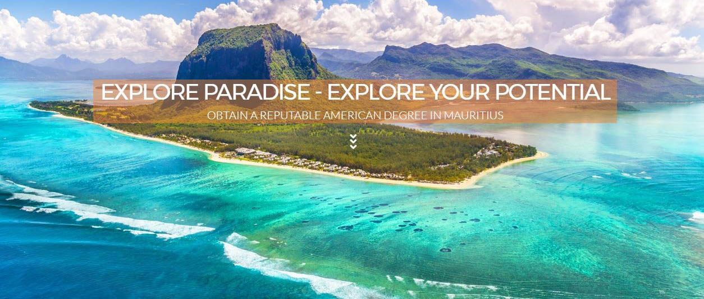

ABOUT MAURITIUS

Mauritius is well known in the Western World as a Paradise Holiday Island, with moderate weather patterns (usually sunny) and beautiful pristine beaches and clear/clean water…
It is the sort of DREAM HOLIDAY destination in many minds!
Located off the coast of Africa, it is well serviced by several international airlines with direct connection flights from London, Paris, Dubai, Singapore, Hong Kong, Perth, Kuala Lumpur .
The island is a unique bi-lingual multi-cultural society… Almost boutique in its existence, Mauritius offers a peaceful, politically stable society with unmatched cultural diversity and an environment where French and English happily co-exist as the generally spoken languages.
Few of the beaches


More than just a beach and holiday destination, modern Mauritius has been busy reinventing itself from a primarily agricultural economy (Sugarcane Paradise), into a desirable regional HUB for Education and Financial services.
With growth encouraging incentives, and inviting tax concessions, the Island has successfully attracted major International investment in the last decade and now offers a thriving economy with good employment opportunities and strong business confidence. Of course, the democratic traditions, and relatively stable politics, have encouraged investment and Mauritian education and the broad international experience is bot held in regard and appreciated in the fast-developing world.
Where in the World? Off the coast of Africa!

The modern city of Port Louis, and the affluent Northern suburbs of the Island (some half an hour drive up) not only offer beautiful sights but also have a wide variety of entertainment, international cuisine, resort living, shopping and affordable water sport opportunities (i.e. sailing, diving, skiing, fishing).
Living in Mauritius can be both enjoyable and peaceful, and in many ways a beautiful lifestyle!
View of Port Louis (the capital city)

The MILLION $$$ Question WHY MAURITIUS?
To attend University (or to send your children somewhere to do so) is an important decision, and often a difficult one. The careful consideration, before making a choice, includes many aspects of life and often require reassurance and confidence around the following topics
- Security
- Is the location safe for their loved ones and desirable?
- Will they feel safe and reassured?
Hygiene Factors
- Are there good facilities? (accommodation, food, cleaning)
- Will they be comfortable? And Looked after?
Distance/Connection
- How far? and Ease of Travel + Good Communication
- Ease of travel and distance from home?
Affordability
- Is it Affordable/Good Value for Money?
Overall cost involved (including living expense etc.)
Fortunately, there is a very strong case for Mauritius as a location; and VERY GOOD REASONS for both Parents and/or Guardians and Students too to encourage them to choose Mauritius!